Технические и программные ресурсы, необходимые для разработки и эксплуатации программного продукта
Для разработки программного продукта достаточно иметь Microsoft Visual Studio 2012 и ОС Windows 7.
Для нормального функционирования программного продукта достаточно иметь у себя на компьютере операционную систему ОС Windows 7/8 и .NET Framework 4.5. Также необходимо иметь следующие файлы:
File_Container.exe – исполняемый файл программы;
help.html – файл справки;
parameters.xml – файл с сохраненными настройками пользователя;
Для правильного функционирования справки, файл help.html нужно чтобы находился в одной папке с исполняемым файлом программы. Для работоспособности программы наличие файла parameters.xml – не обязательно, при его отсутствии он создастся автоматически в текущей папке приложения после первого закрытия программы.
Интерфейс приложения
Программный продукт имеет главное окно и несколько диалоговых окон, перечень которых будет описан ниже.
В главном окне приложения (рис. 1) присутствует 4 кнопки («Сохранить архив», «Добавить файл», «Добавить папку», «Извлечь файлы»), также функционал этих кнопок присутствует в меню «Файл», кроме этого функционала там еще есть «Выход». В главном окне присутствует еще кнопка с изображением стрелки, которая позволяет вернуться в предыдущий каталог при работе с окошком для навигации по каталогам и файлам расположенным на компьютере. Кроме этого есть еще возможность выбора метода сжатия и формата архива ну и конечно меню «Справка», в котором находится справка и информация о разработчике приложения.
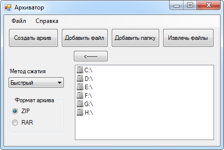
Рисунок 1 – Главное окно приложения
При нажатии на кнопку «Создать архив» будет открыто соответствующее диалоговое окно (рис. 2).
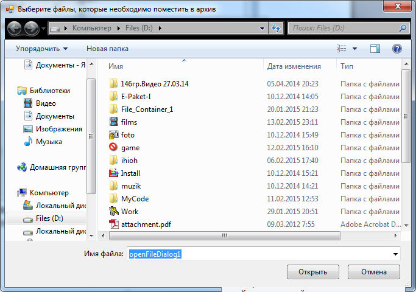
Рисунок 2 – Окно для создания архива
Если вместо выбора существующих файлов написать имя несуществующего и подтвердить выбор, то появится предупреждение о том, что такой файл не найден (рис. 3).
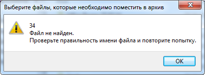
Рисунок 3 – Предупреждение, показывающее, что указанный файл не найдено
Если файл был выбран корректно, то будет показано окно для выбора места хранения и ввода имени архива (рис. 4). Имя архива рекомендуется вводить не существующее, чтобы избежать возможных ошибок.
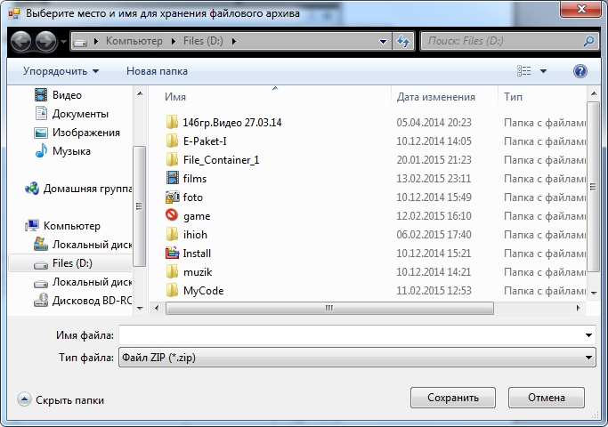
Рисунок 4 – Окно сохранения архива
После нажатия кнопки «Сохранить» в диалоговом окне (рис. 4) будет показано сообщение о успешно проведенной операции (рис. 5).
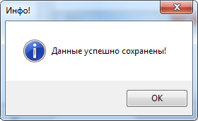
Рисунок 5 – Успешное завершение создания архива
Если же будет введено имя архива, которое уже существует, то будет предложено заменить существующий архив, при этом могут возникнуть проблемы с успешным сохранением архива, будет выведено соответствующее сообщение (рис. 6).
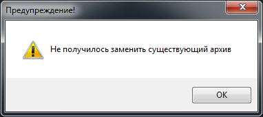
Рисунок 6 – Ошибка при замене существующего архива
При нажатии на кнопку «Добавить файл» будет выведено окно аналогичное рисунку 2, только с отличием в заголовке окна. В нем нужно будет выбрать файл, который хотим добавить в архив. После этого появится окно аналогичное окну на рисунке 4, только здесь нужно будет выбрать уже существующий архив, а не вводить имя нового. После успешного завершения добавления появится соответствующее окно (рис. 7).
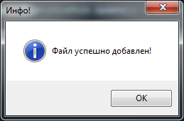
Рисунок 7 – Успешное добавление файла
При нажатии на кнопку «Добавить папку» будет вызвано окно для выбора папки (рис. 8).
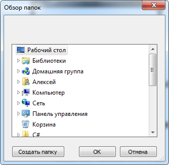
Рисунок 8 – Окно выбора папки
После выбора необходимой папки появится окно для выбора архива, к которому необходимо добавить папку (рис. 9).
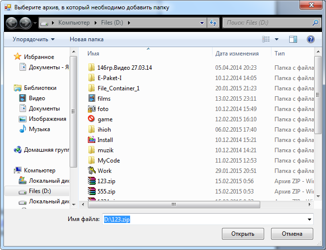
Рисунок 9 – Окно добавления папки
При указании не существующего имени архива появится предупреждение, аналогичное как на рисунку 3. Если же операция добавления папки будет завершена удачно, то появится соответствующее сообщение (рис. 10).
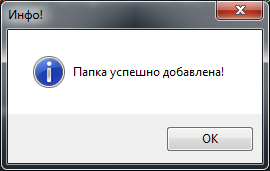
Рисунок 10 – Успешное добавление папки
При нажатии на кнопку «Извлечь файлы» появятся соответствующие окна для выбора архива, который необходимо извлечь и для выбора места, куда необходимо его извлечь. Если файлы будут извлекаться в папку, в которой уже присутствуют такие файлы, то будет выведена ошибка (рис. 11). При удачном извлечении файлов выведется соответствующее сообщение (рис. 12).
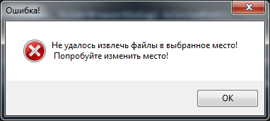
Рисунок 11 – Ошибка при извлечении файлов
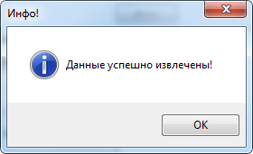
Рисунок 12 – Успешное извлечение данных
В меню «Файл» дублируются команды этих кнопок.
При выборе метода сжатия на главном окне производится соответствующий выбор о том, с какой степенью сжимать или не сжимать архив:
- Без сжатия – файлы и папки просто помещаются в архив.
- Быстрый – быстрое сжатие файлов и папок помещаемых в архив.
- Оптимальный – более сильное сжатие файлов и папок по сравнению с быстрым сжатием, но этот метод работает медленнее.
При выборе формата архива указывается, какое будет расширение у создаваемого архива (ZIP или RAR).
При выборе пункта меню «Справка» предоставляется возможность вызвать справку и посмотреть информацию о программе. Также можно вызвать справку и информацию о программе с помощью горячих клавиш (F1 и F2 соответственно).
При вызове справки открывается окно со справкой (рис. 13).
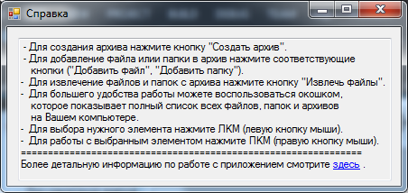
Рисунок 13 – Окно «Справка»
При открытии информации о программе открывается окно с информацией о разработчике программного продукта (рис. 14).
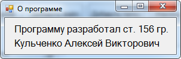
Рисунок 14 – Окно «О программе»
Для удобства работы пользователя, в правом нижнем углу главного окна, была создана система для просмотра списка имеющихся файлов и уже созданных архивов на компьютере (рис. 15).
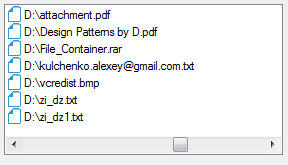
Рисунок 15 – Список всех файлов
При работе с данным списком можно также выполнять все описанные ранее действия с файлами, папками и архивами.
Для того чтобы выполнить какое-нибудь действие, необходимо выбрать соответствующий файл (папку или архив) нажатием ЛКМ и вызвать контекстное меню нажатием ПКМ. В зависимости от выбора (файл (рис. 16), папка (рис. 17) или архив (рис. 18)) будет выводиться соответствующее меню.
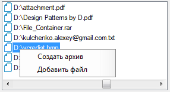
Рисунок 16 – Выбор файла
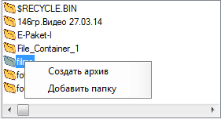
Рисунок 17 – Выбор папки
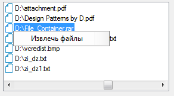
Рисунок 18 – Выбор архива
Для возврата в предыдущую директорию используется кнопка возврата (рис. 19).
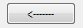
Рисунок 19 - Кнопка возврата
При открытии файла или архива, запускается соответствующая программа для просмотра содержимого.
При закрытии программы или выходе с нее через меню «Файл», будет производиться сохранение настроек в файл parameters.xml, сделанных пользователем при работе (сохраняется последние выбранные метод сжатия и выбранный формат архив).